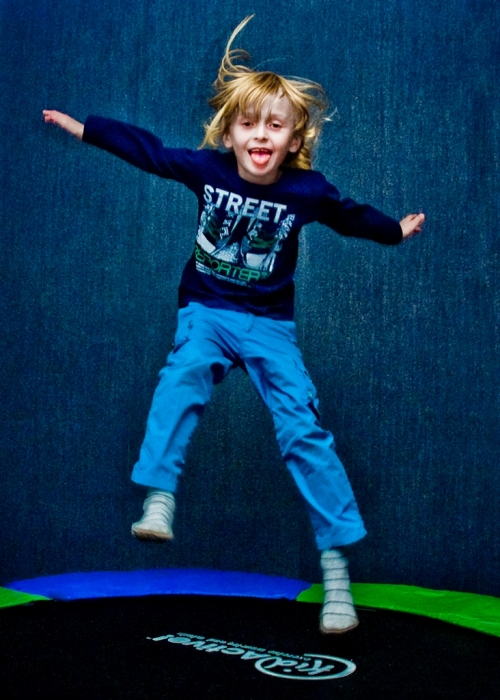
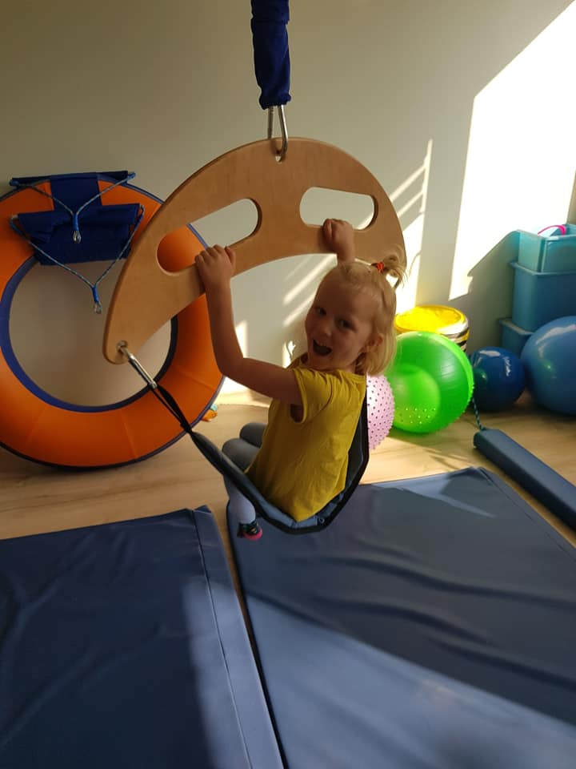

Zaburzenie integracji sensorycznej to problem bardzo złożony. Może mieć wpływ na rozwój i zachowanie dziecka, na komunikowanie się ze światem, na proces uczenia się i radzeniu sobie z codziennymi czynnościami. Prawidłowy rozwój i funkcjonowanie dziecka, jest uzależniony od prawidłowej integracji systemów zmysłowych: słuchowego, wzrokowego, prioprioceptywnego, dotykowego, przedsionkowego oraz zmysłu węchu i smaku.
Kiedy zwrócić się do terapeuty SI?
Jeżeli kilka z poniższych stwierdzeń opisuje Twoje dziecko, powinieneś zwrócić się do Terapeuty Integracji Sensorycznej:
- niechętnie próbuje nowych rzeczy,
- je mało zróżnicowane jedzenie,

- ma dużą wrażliwość na zapachy,
- czuje dyskomfort / napięcie kiedy przebywa w zatłoczonych miejscach,
- bywa nadmiernie pobudzone i nadmiernie aktywne,
- ma problemy z koncentracją i uwagą,
- ma trudności z motoryką małą (pisanie, zapinanie guzików, wycinanie itp.),
- wydaje się niezdarne, często upada, potyka się,
- nie reaguje na ból i nie zauważa innych bodźców dotykowych,
- zbyt mocno dotyka inne osoby,
- w większości preferuje niebezpieczne zabawy np. zbyt wysokie wspinanie się,
- lubi długo trwające zabawy typu huśtanie, kręcenie, często bez objawów dyskomfortu,
- reaguje na dotyk agresją lub wycofaniem się,
- nie lubi dotykać nowych faktur,
- nie lubi lekkiego dotyku a preferuje stanowczy,
- nie lubi: mycia twarzy, czesania, obcinania paznokci, mycia zębów,
- boi się wysokości i ruchu, lub odczuwa mdłości w wyniku niewielkiego ruchu bądź wysokości,
- lubi bardzo głośne dźwięki np. głośno grająca muzyka, telewizor,
- ma opóźnioną mowę lub trudności z wymową,
- ma słabe umiejętności z zakresu dużej motoryki np. kopanie, łapanie, rzucanie piłki,
- ma trudności z naśladowaniem ruchów,
- ma trudności z utrzymaniem równowagi,
- preferuje znane aktywności i zabawy,
- preferuje aktywności statyczne, siedzące np. oglądanie telewizji, czytanie książek, układanie puzzli.
Terapia SI wykorzystywana jest w pracy z dziećmi z:
- Zaburzeniami integracji sensorycznej (nadwrażliwością lub podwrażliwością np. dotykową, wzrokową, słuchową, przedsionkową, niepewnością grawitacyjną, nietolerancją ruchu, dyspraksje),
- Opóźnieniem rozwoju psychoruchowego,

- Ciąż wysokiego ryzyka, przedwcześnie urodzonymi lub znacznie po terminie, po pobytach na OIOM-ie,
- Noworodkowym, po powikłanych porodach, urodzonymi przez cesarskie cięcie,
- Opóźnieniem i zaburzeniami rozwoju mowy,
- Specyficznymi trudnościami szkolnymi, takimi jak: dysleksja, dysgrafia, dysortografia, dyskalkulia,
- Niepełnosprawnością umysłową,
- Niedowidzącymi i niedosłyszącymi,
- ADHD, ADD - Zaburzeniami ze spektrum autyzmu,
- Zespołem Downa, Williamsa, Turnera, Kinefertera,
- MPD (mózgowym porażeniem dziecięcym),
Diagnoza procesów Integracji Sensorycznej
Pełna diagnoza Oceny Dojrzałości Procesów Sensorycznych obejmuje 3-4 spotkania:
- Polega na przeprowadzeniu wywiadu z rodzicami/ opiekunami
- Obserwacji dziecka podczas spontanicznej i kierowanej zabawy, a także przeprowadzeniu specjalistycznych testów z zakresu Obserwacji Klinicznej oraz zestandaryzowanych Południowo-Kalifornijskich Testów Integracji Sensoryczne w przypadku dzieci powyżej 4 roku życia
- Pełna diagnoza kończy się wydaniem pisemnej opinii
- Wynik diagnozy może wykazać, czy pacjent ma trudności z integracją sensoryczną i jakie konkretnie obszary są dotknięte tymi trudnościami.